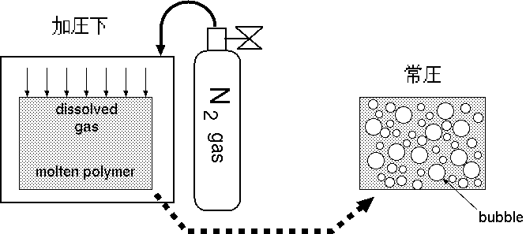
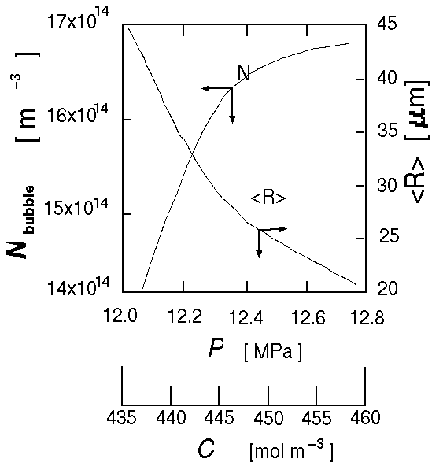
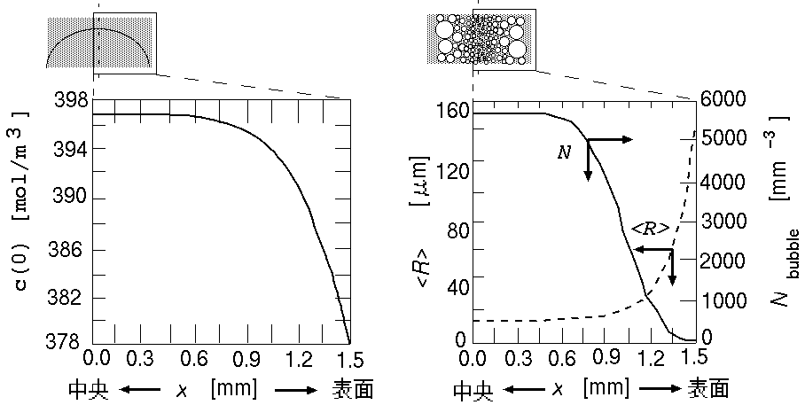
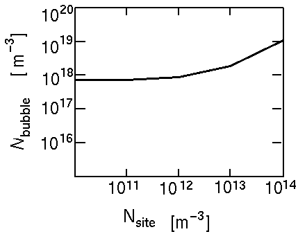
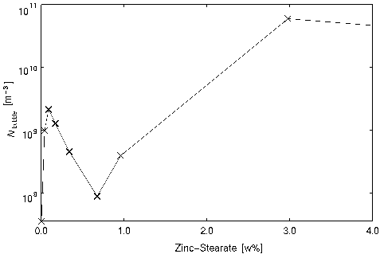
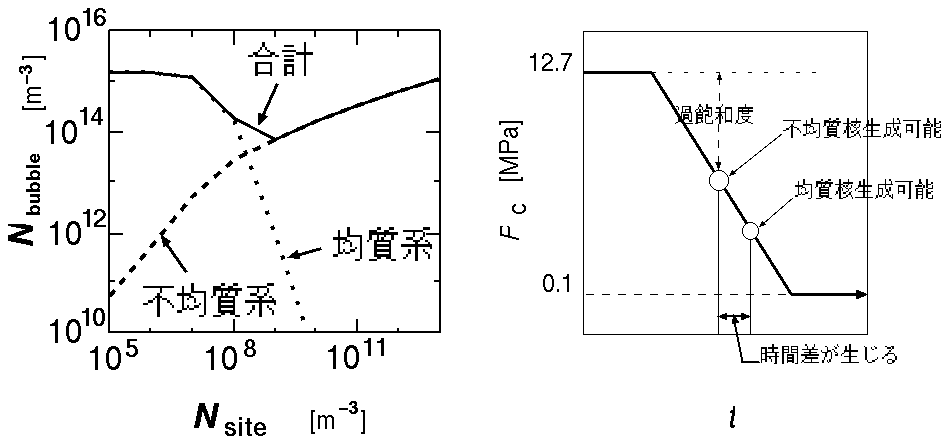
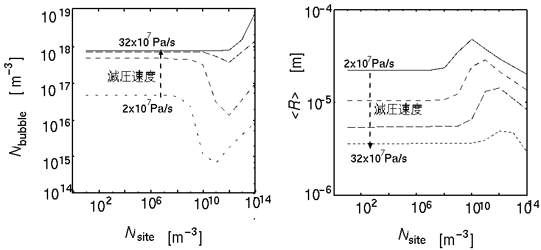
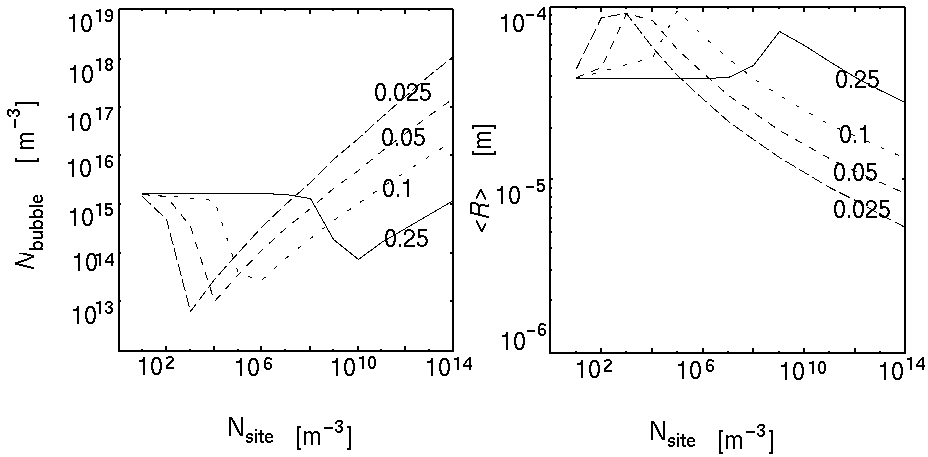

葉山 薫 修士論文
高分子樹脂中での物理発泡現象の
計算機シミュレーション
概要解説
緒言
内部に多数の気泡を含有させた樹脂---高分子発泡樹脂は、
その軽量性をかわれ、我々の身の周りのあらゆるところで利用されている。
この発泡樹脂は一般に、より小さな気泡が多数含まれるほど、
その樹脂の軽量性や、強度は高くなる。
発泡樹脂の製法は、主に溶融状態の樹脂中に、溶解度を越す多量のガスを発生させることが基本となる。
その過飽和状態の作り方によって、製法は、大きく化学発泡成形と物理発泡成形とと分類される。
化学発泡は、発泡剤と呼ばれる、熱分解してガスを発生する物質を
樹脂中に混入して、過飽和状態を作り出す手法であるのに対し、
物理発泡とは、圧力操作や温度操作で溶解度を変化させて、過飽和状態を作る手法である(図1)。
物理発泡成形による樹脂の製造工程においては、望ましい大きさと数の気泡を樹脂中に生成す
ることが重要となる。成形加工の分野では、流動解析用ソフトウェアは数多く開発・運用
されているが、発泡現象を取り入れたものは、まだ無い。
そこで、発泡樹脂成形用ＣＡＤの製作を目指し、
本研究では、その第一歩として、流れと切り離した樹脂の発泡現象シミュレーション用ＣＡＤ開発を行った。

図1 物理発泡プロセス
理論
あまりに数式が多く、HTML化が困難なので、省略します。
詳細につきましては、おそれいりますが、
大嶋正裕 助教授の方へお問い合わせください。
(と、勝手にふる...^_^)
結果
発泡樹脂の品質を測るパラメーターとして、
単位樹脂体積あたりの気泡の数密度 と 平均の気泡径がある。
本章では、核剤のない場合、核剤のある場合について、
与えられた条件がこれら二つの値に及ぼす影響について検討する。
本節では、まず気泡数密度に最も強く影響する、圧力と発泡の関係を検討し、
次に、加圧直後の溶解濃度と発泡との関係から、樹脂上に気泡密度の分布を作る
方法について考察したい。
発泡に影響を与えるパラメータには、他に粘度・温度などがあるが、
これらについては、四回生の高田光子さんの卒業研究で詳しく取り扱っているので割愛する。
圧力と発泡の関係
減圧が瞬間に行われるものとして、加圧する際の圧力を変化させた場合の
シミュレーション結果を次に示す。

図2 加圧圧力P と気泡密度(Nbubble、平均気泡径(<R>)の関係
CはPと平衡な溶解ガス濃度。
加圧圧力が高いほど、より小さい気泡が多数生成し、加圧圧力を下げるに従って、
数が減るが、一つ一つの気泡は大きくなってゆく。
これは、気泡数が多いほど、気泡一つあたりに配分される過飽和溶解ガスの量が減るためである。
特に加圧圧力については、核生成速度に指数的に影響を与えるために、このように最終的な発泡状態
大きな影響を与えることになる。
溶解ガス濃度と発泡の関係
ヘンリーの法則より、加圧圧力は、発泡前の溶解ガス濃度:初期濃度に正比例する。
発泡は上記のように、加圧圧力にかなり敏感に影響を受けるが、
これは初期濃度に対しても同様であるといえる。
そこで、適当に拡散させるなどして、樹脂上に初期の溶解ガス濃度の分布をつければ、
樹脂上に発泡数密度の分布を作ることができると思われる。
今、厚さ3mmの樹脂の厚み方向に、図3(a)のような
溶解ガス濃度分布ができているとする。
なお、これの濃度分布は、最初 1.27x107 Pa で溶解させたあと、
周辺を 1.10x107 Pa 下に3秒間放置して、作り上げた濃度分布であるが、
この程度の減圧では、核生成が起こらないので発泡せず、濃度が変化するのみである。
これを 1.00x105 Pa まで減圧をして、発泡させた結果を図3-(b)に示す。

(a) 濃度分布 (b) 気泡の数密度・平均径分布
図3 板状樹脂上の溶解ガス濃度と気泡の数密度・平均径の分布
基本的に樹脂の中央では濃度が高いので、小さな気泡が多数存在し、
それが表面に行くに従って、数を減らしつつ、大きくなっている。
この傾向は、Kumar の実験結果にも現れている。
Kumar は樹脂表面に無発泡被膜を作るためにこの実験を行っているが、
その無発泡被膜は、溶解ガス濃度が小さくなりすぎて、
核生成速度が極端に小さくなった結果であると考えることもできる。
核剤を含有した樹脂での発泡のシミュレーション
瞬間減圧によるシミュレーション結果
核剤を含有した場合、均質核生成と不均質核生成の両方を考えるので、
単位時間あたりの核生成個数は、Jtotal=Jhom+Jhetとなる。
まず、従来の物理発泡研究のように、減圧が瞬間的に行われるとした場合の、
核剤量と気泡数をシミュレーションで求めた結果を図4に示す。
だが、Suh らの実験結果(図5)と異り、
核剤量に対して、単調に気泡数が増加するような結果となってしまった。
(注)
Suh の発泡プロセスは圧力だけでなく、温度も変化させているので、
厳密にいえば、違うプロセスとなる。
だが、以下で述べる圧力の瞬間的/徐々変化は、
温度の瞬間的/徐々の変化と読み直すことで、
基本的に同じように解釈してもよいはずだと葉山は考えている。

図4 瞬間減圧時の核剤量と気泡数の関係

図5 Suh のポリスチレン=ステアリン酸亜鉛系の実験データ
減圧が徐々に行われるとした場合
減圧が瞬間的とおかず、ゆるやかに進むとしたのは、
本来は実験の状況にシミュレーションを近づけるのが目的であったが、
結果的に Suh らの実験結果をシミュレーションでうまく表現できるようになった。
図6は、減圧速度kH=1.0x107 Pa/sと置いた時の、
シミュレーション結果である。
このような、気泡数の極小値が生じる理由としては、
不均質核生成と均質核生成の始まるタイミングの違いがある。
不均質核生成は活性化エネルギーが小さいので、
溶解ガスの過飽和度が小さくても核生成可能である。
これは減圧がそれほど進んでいない時点から、
核生成を開始できるので、均質核生成に先だって成長を始め、
溶解ガスを取り込み始めることを意味する。
その結果、均質核生成による気泡の数が減る結果となる。
図6を見ると、
核剤量が増えるほど、不均質核生成による気泡数が増加し、
均質核生成は逆に減少していることからも、この傾向が分かる。

図5 瞬間減圧時の核剤量と気泡数の関係
図6 核発生のタイミング
核剤や減圧速度の影響
図7 に様々な減圧速度に対する、核剤の量の影響を示した。
(a)を見ると、減圧速度が速くなるほど、数密度の極小値の谷が浅くなってゆくのが分かる。
これは減圧が速いと、それだけ、均質・不均質の核生成のタイミングの差が縮まってゆくからであり、
不均質核発生による気泡がガスを占める割合が小さくなり、平等にガスが分配されてゆくからである。
逆に速ければ、最も早く核生成した不均質系の気泡にガスが集中することになり、
均質核生成にまわるガス量がなくなり、気泡数が減る結果となるのである。
(b)は、平均気泡径の変化を表している。
また、気泡数が多いということは、それだけ、核生成したての極めて小さい気泡が多いということを意味する。
それゆえ、平均気泡径は一般に気泡数が多いほど、小さくなるという傾向を示す。

(a) 気泡数密度 (b) 平均気泡径
図7 核剤量・減圧速度に対する発泡状態の変化
図8は、核剤の性能を表わすパラメータFの影響を示している。
Fが小さいほど、不均質核生成が起きるタイミングが速くなるため、
より少ない核剤量でも不均質核生成の影響が起こるようになることが分かる。

(a) 気泡数密度 (b) 平均気泡径
図8 核剤性能に対する発泡状態の変化
 葉山 薫のページへ戻る
葉山 薫のページへ戻る
材料プロセス工学研究室ホームページへ戻る